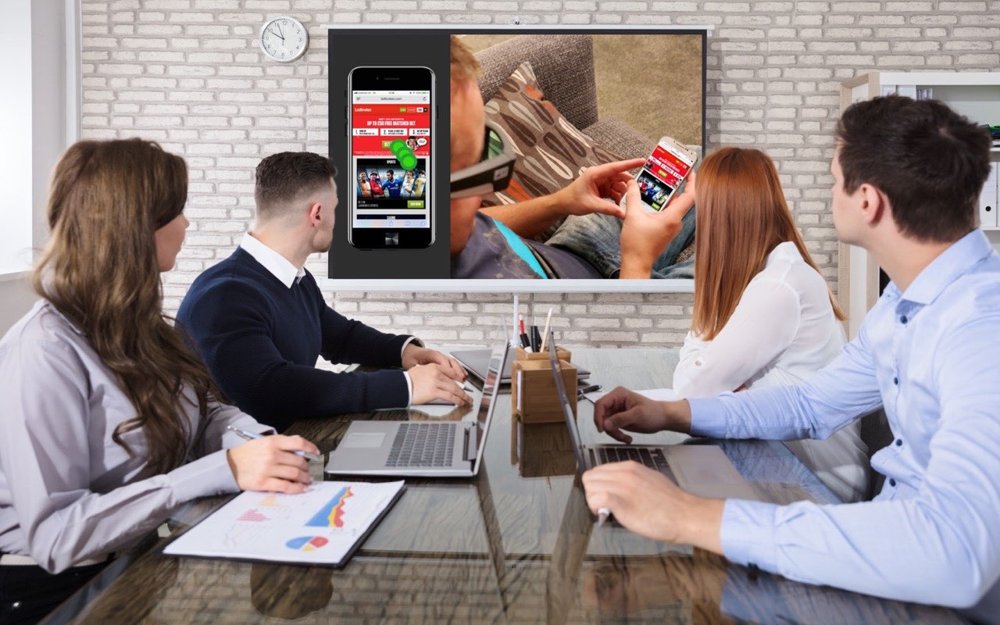
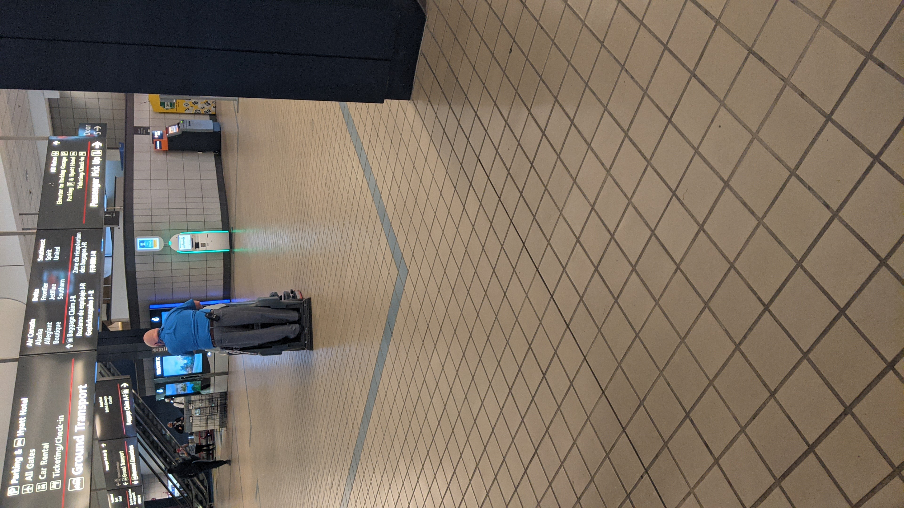

Waste-Labor
AI Project
AI Project
What was the goal:
Through ongoing ethnographic interviews and media analysis, this project has identified a unique set of roles and responsibilities brought on by the rapid automation of waste management workplaces during the COVID-19 pandemic. Over the course of the Fall semester I worked with the Tech Solidarity Lab at CMU in an effort to, engage a broad set of stakeholders in waste management to design new roll out strategies, best practices, and training materials for the deployment of AI technologies in essential sectors.

What methods did we use:
We conducted:
1. Qualitative interviews with essential workers in the waste industry; service
2. Observational research at the airport, sites that also use the same automated
technology, and
training sessions (to use the automated technologies)
Skills employed:
Qualitative research: in-person and virtual interviews and observational research
Qualitative research: in-person and virtual interviews and observational research
Design research: participatory research, co-design, interaction design, service
design, transition design
Data Analysis: data collection, open coding, synthesis, and
analysis.

What did I learn:
Throughout this project, I learned about the fast-paced environment of ethnographic research and how to apply my academic and theoretical knowledge to a project with stakeholders. I learned a lot about how to carry myself in a meeting and how to conduct user experience methods outside of academic environments, overall an incredibly useful project.
